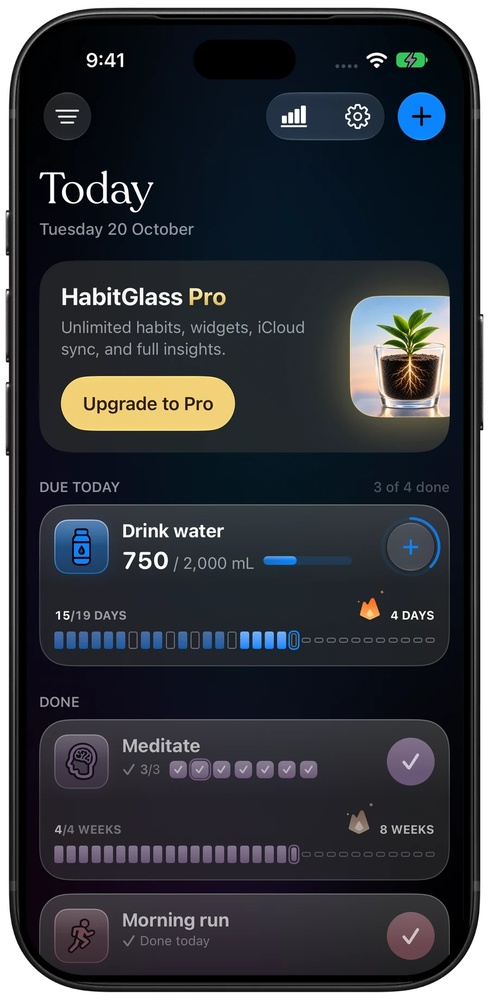
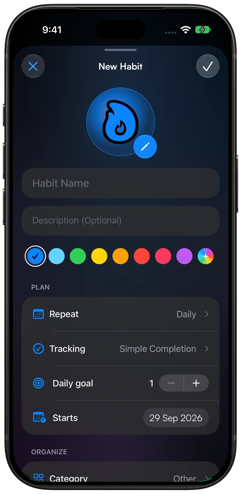
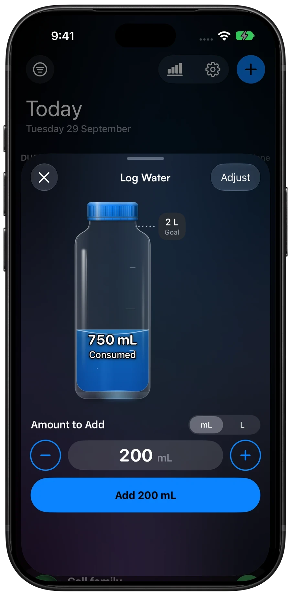
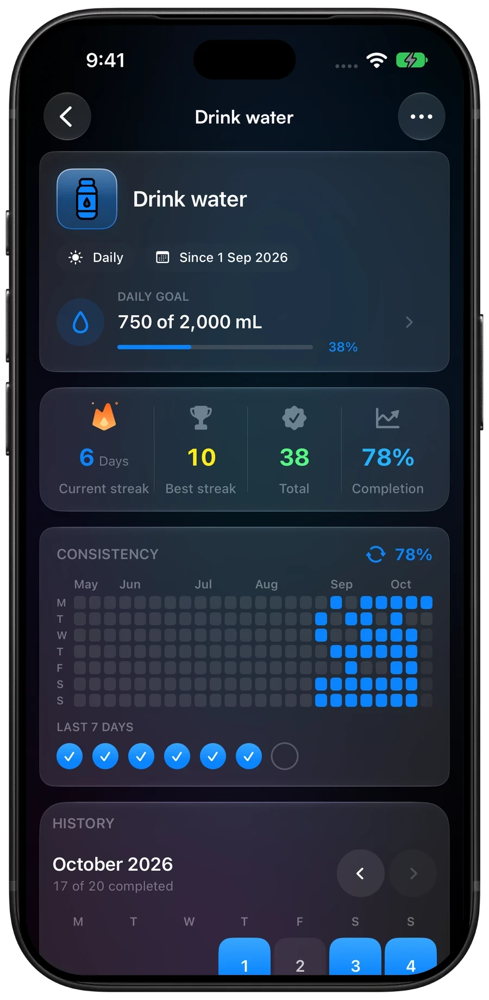

Give it a rhythm.
Every day, certain weekdays, or a few times a week. Set a schedule that fits your life.
A habit tracker for iPhone.
Read a few pages. Drink some water. Go for that walk.
Make room for the things you want more of.
Three habits free. Yours to keep.

One place for your habits, from the first check-in to the bigger picture.



Set it up once.A tap, a drink, a page.A little perspective goes a long way.
Every day, certain weekdays, or a few times a week. Set a schedule that fits your life.
Check it off, log a drink, or add the pages you read. Track time, too, and habits you want to quit or limit.
A bar for each day. History you can look back on. Streaks that respect your rest days.
Try a month. Tap a day, or drag across a few. The gaps stay honest. Rest days keep the run intact.
Weekdays · September
An example month. Nothing is saved.
Three habits, every schedule and schedule-aware streaks are free for good. Pro takes the cap off and adds these.
Link a habit to Health and pick one reading: steps, active energy, exercise minutes or workouts. When Health shows the goal met, the day ticks itself off. Two short runs can make one goal.
HabitGlass only reads, and only on your iPhone.
How Health habits workCheck off today's habits from the Home Screen, as a list or one at a time. Your streak sits on the Lock Screen.
A check-in calendar, a consistency heatmap and a streak leaderboard, so you can see which habit is slipping.
Up to six a day, repeats between two times, and follow-ups after a missed one. They stop once you're done.
Off until you switch it on. Then your habits mirror through your own private iCloud database.
Go past three active habits and sort them into categories of your own.
Up to 20 check-ins a day, like glasses of water or stretch breaks. The card fills as you tap.
Tap a day and write down why it went well, or why it didn't.
Away for a week? Pause a habit and the streak waits for you.
Three habits are free. Pro is a subscription, or a single purchase.
A$0
For your first three habits.
A$29.99/ year
Or A$5.99 a month.
A$89.99once
One purchase. No renewal.
Australian prices include GST. The App Store shows the price for your region before you buy.
Your habit data lives on your iPhone. No account to create. No ads or analytics. If you choose iCloud sync, your habits use your own private iCloud database.
Read the privacy policyMade by one person. For the little things that matter.